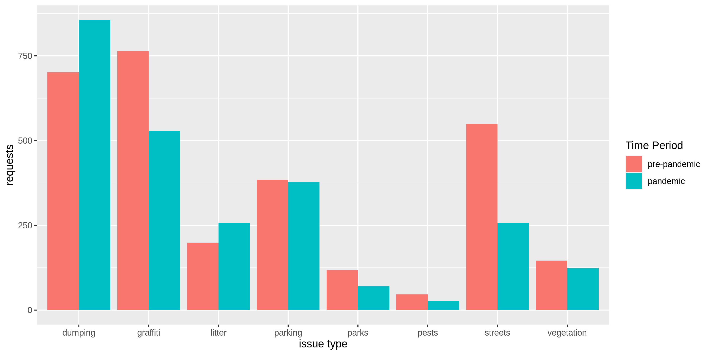
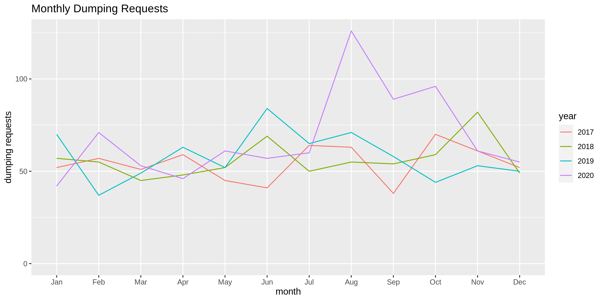
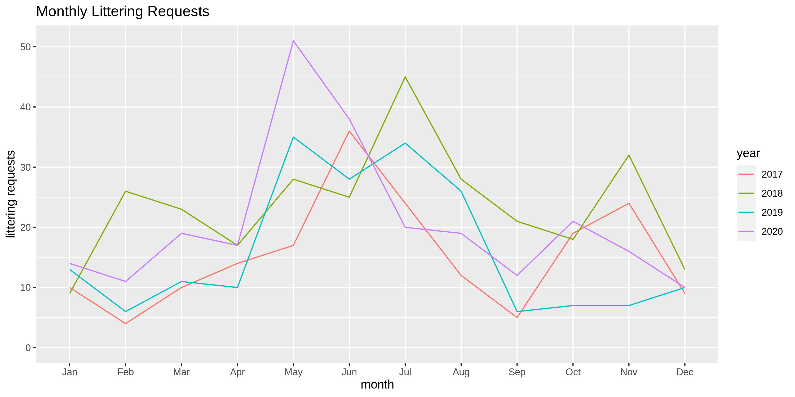
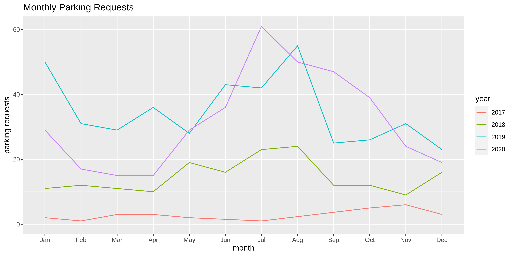
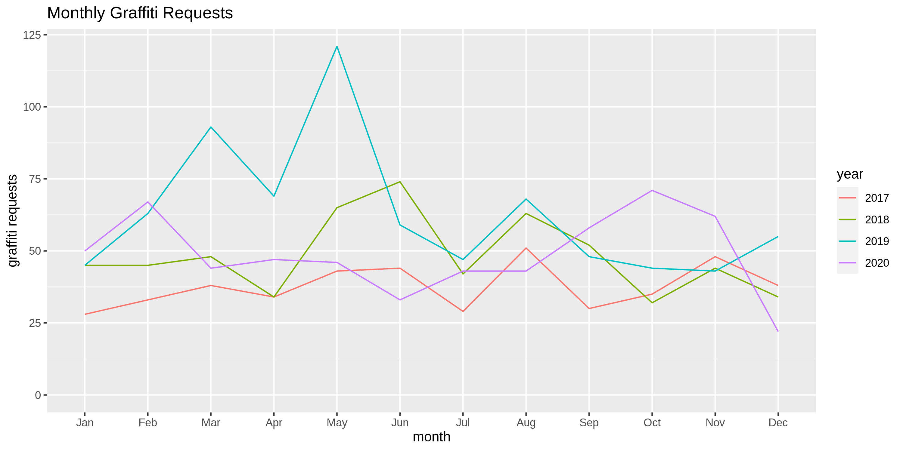

Lake Merritt 311 Service Requests
Has Lake Merritt really gone to hell since the COVID-19 pandemic began?
Anna E. Jurgensen
Oakland's "Crown Jewel," Lake Merritt, is home to the oldest wildlife refuge in the US, the oldest ongoing women's whaleboat rowing club in the US, a variety of recreational clubs, and several gardens. It's now also home to frustrated residents who have complained throughout the pandemic that increased crowds have led to what they claim are more traffic snarls, vandalism, littering, and dumping around the lake and in the nearby neighborhoods. In this project I examine 311 service requests made in the Lake Merritt Area both before and during the pandemic to examine which, if any, types of complaints have in fact increased from pred-pandemic levels.
Lake Merritt Features
Total Request Volume Pre- vs Mid-Pandemic
Requests Across Months of Year
Illegal Dumping
Litter
Parking
Graffiti
Time to Close Requests